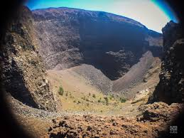
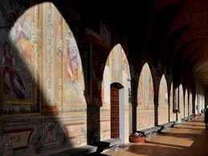

NÁPOLES
Nápoles es una ciudad del sur de Italia que se ubica en el golfo de Nápoles. Cerca se encuentra el monte Vesubio, el volcán aún activo que destruyó la cercana ciudad romana de Pompeya.

Dominique: Nápoles es una de las más grandes y encantadoras ciudades artísticas del Mediterráneo. Capital de la región Campania es, por su tamaño, el tercer municipio italiano después de Roma y Milán. La ciudad domina el homónimo golfo que se extiende de la península sorrentina hasta la zona volcánica de Campos Flegreos y ofrece una vista sumamente evocadora.
El Monte Vesubio es un volcán activo del tipo vesubiano situado frente a la bahía de Nápoles y a unos nueve kilómetros de distancia de la ciudad de Nápoles.

El Museo Arqueológico Nacional de Nápoles El Museo Arqueológico Nacional de Nápoles está considerado uno de los más importantes de su género en Europa, tanto por la calidad como por la cantidad de las obras que expone.
El Palacio Real de Nápoles es un edificio histórico situado en la plaza del Plebiscito, en el centro histórico de Nápoles.

El Castel Nuovo , conocido popularmente como Maschio Angioino, es un castillo medieval italiano construido en la ciudad de Nápoles.
La Basílica y el Convento de Santa Clara se construyeron entre 1310 y 1340, sobre un complejo de baños romanos del siglo I d. C., cerca de la muralla occidental de la ciudad de Nápoles. Es la mayor iglesia gótica de la ciudad.
